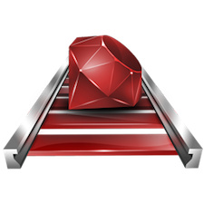

Exploring Rails
June 12, 2014

Much of my education up until now has been absorbing Ruby the language. However, learning the language is one thing, but what comes after that? What is it used for? I'd heard of "Ruby on Rails", or sometimes just "Rails", and understood that this was the tool that allowed you to use the language Ruby to build things, but how? How was it connected to Ruby if it wasn't Ruby? If Ruby the language is the gem above then what do the rails represent?
Let's start off with a bit of Rails background. Rails was created by David Heinemeier Hansson when he extracted it from his original work called Basecamp. Ruby on Rails(RoR) was realeased July 2004 and hit it's first major milestone when Apple announced it would ship with Mac OSX Leopard in 2007, making it much more widely accessible.
Rails defined:
"Rails is an open source full-stack web application framework written in the Ruby Programming Language. Rails is capable of gathering information using pages and applications from the web server and can interact with a database and can retrieve information from the database."
For those who are not familiar with the term "framework" it is the middle man of the internet that is responisible for receiving HTTP requests, dispatching code that generates HTML, and creating an HTTP response with that content. Frameworks are the tools that generate the content on a website. (NOTE: Client-side frameworks such as Backbone.js or JavaScriptMVC are a whole different ball game! They function differently, so this definition does not apply here.) Other popular frameworks besides Rails include PHP, Java(not to be confused with JavaScipt), and .NET.
Without a web application development framework, a programmer has a mammoth task to implement all the required infrastructure on their own. Rails is just like a bike frame, it sets the initial shape and tone for the rest of the bike. Many different things will be added on to it - handle bars, whiles, gear kit, bells an maybe even whistles! Many different styles of bikes can resule from a single bike frame, but the frame itself never changes. Rails sets an initial environment with built in conventions and principles by which the application will behave.
RoR's core principles:
- Convention over Configuration - Provides good default values, reducing the need to specify program details in every project.
- DRY (Don't Repeat Yourself) - A principle aimed at reducing repetition of information of all kinds, especially useful in multi-tier architectures. The DRY principle is stated as "Every piece of knowledge must have a single, unambiguous, authoritative representation within a system."
- MVC (Model-View-Controller) - Is a software architectural pattern for implementing user interfaces.
- Active Record Pattern - An architectural pattern found in software that stores its data in relational databases. The interface of an object conforming to this pattern would include functions such as Insert, Update, and Delete, plus properties that correspond more or less directly to the columns in the underlying database table.
When starting out with Rails your technology "stack" will include Ruby on Rails(web application framework, the WEBrick web server(database to store your data), SQLite database(to interact with your database), and your computer operating system(Windows, Mac OS X, Linux). As a part of the Rails stack you will have access to software libraries(gems) that can add features to your aplication and make developmetn easier. You will use Rails to generate your HTML, CSS, and Javascript web pages into a functioning web applicaiton.
Starting to get a handle on Rails? Well there's a ton more that this blog just begins to touch on. I highly recommend these resources to deepen your understanding further...
More Rails
What Is Ruby on Rails VIDEO: Ruby on Rails 101